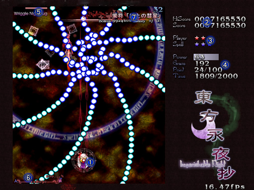

人妖弾幕幻夜
東方永夜抄 〜 Imperishable Night.
■画面説明

１．プレイヤー
２．最高得点 ･･･ 現在のキャラ、武器、難易度での過去ハイスコア
得点 ･･･ プレイ中のスコア
３．プレイヤー残機と残りボム数
４．パワー ･･･ Ｍａｘと表示されたらパワー最大です（１２８個で最大）
敵弾かすり回数
得点アイテム取得数／次回エクステンド必要数
刻符取得数／刻符取得数ノルマ
５．真ん中のゲージ、ボス（中ボス）の残り体力
左のゲージ、ボス（中ボス）の体力ゲージの残り本数
右の数字、ボス（中ボス）の自爆までの残り時間
６．上の％表示、妖率
中央の数字、得点アイテムの最高得点
７．スペルカードの名前、ボーナス点、取得回数／遭遇回数
トップへ
プログラム本体、イメージデータ、曲データ、及びマニュアル全ての著作権は製作者ＺＵＮにあります。
著作者の許可無しで複製、転載、配布を禁じます。
2004 (C)opyright ZUN. All rights reserved.